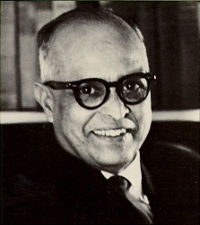

Date of Birth: October 10, 1906
Date of Death: May 13, 2001
R.K. Narayan
R.K. Narayan was a renowned Indian English-language novelist. He is best known for his "Malgudi Days" series, which depicted life in the fictional South Indian town of Malgudi.
Narayan's works often explored themes of human nature, social change, and the impact of modernization on traditional Indian society. His writing style was characterized by its simplicity, humor,
and keen observation of human behavior.